Download and install Metamask
Download MetaMask
The first step in this process is downloading and installing MetaMask for your browser. No matter the browser, the steps should be identical. Here’s how to get MetaMask:
1 .On your preferred browser, download the official MetaMask extension.
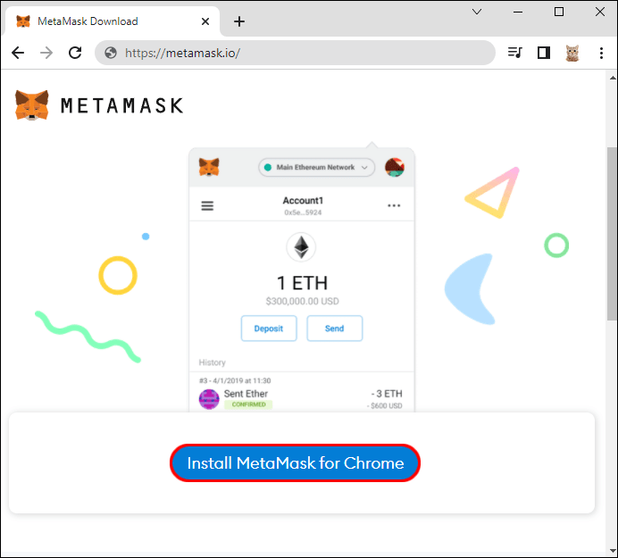
2 .Install and enable the extension.
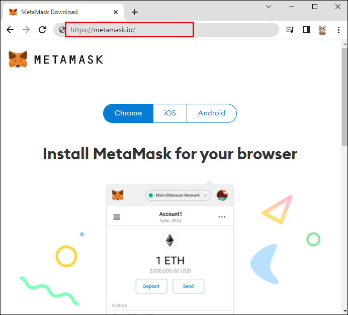
Installing MetaMask
3 .Click on “Get Started.”
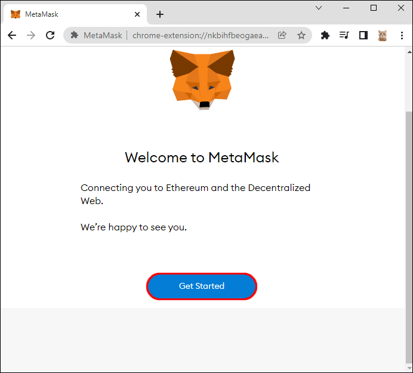
4 .Select “Create A Wallet” to continue.
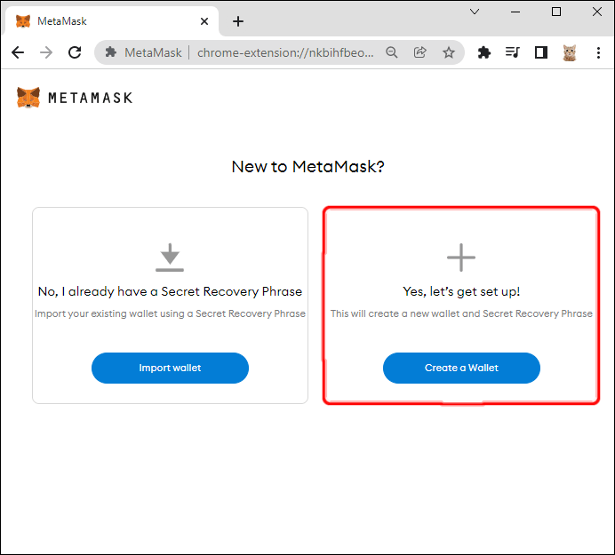
5 .Choose to send MetaMask data or not.
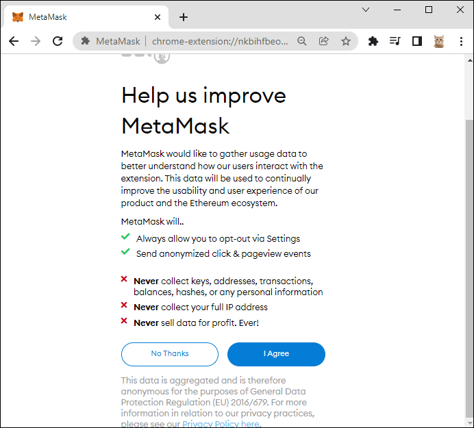
6 .Create and confirm a secure password.
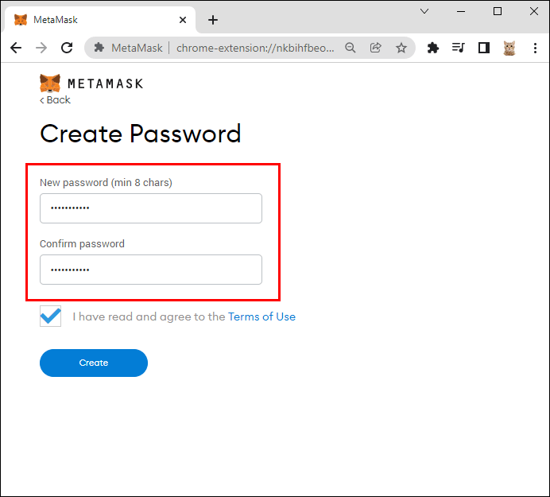
7 .Write down your backup phrase and keep it somewhere safe.
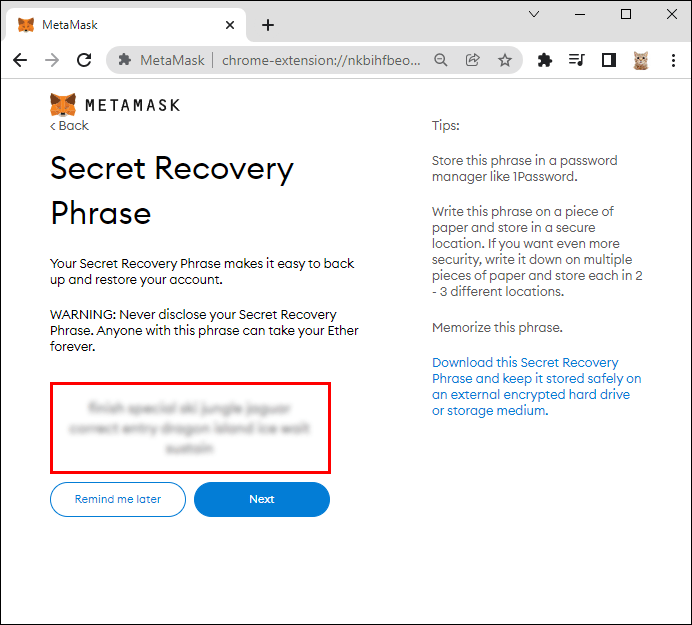
8 .Confirm your backup phrase.
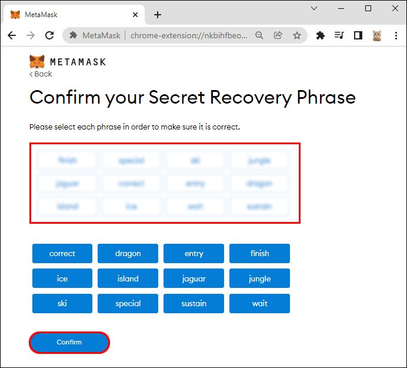
9 .Select “All Done” and log in automatically.
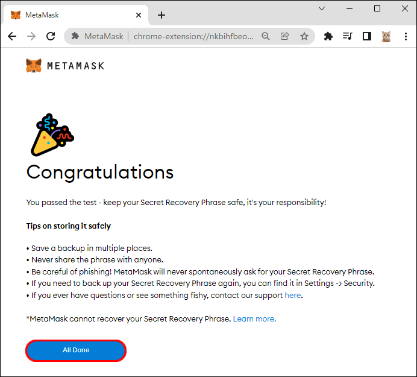
At this point, you can leave and come back later if you decide to wait before purchasing some Ethereum. If you somehow get logged out, you only have to click on the MetaMask icon to the right of your URL bar to re-access your account.
You’ll need to have some Ethereum in your MetaMask wallet before you can create an OpenSea account. To buy some Ethereum, you’ll have to sign up for an account on a cryptocurrency exchange platform like Coinbase. By connecting your MetaMask
wallet to the platform, you can receive your new Ethereum.
However, there’s a waiting period of up to 15 days before you can send the Ethereum to MetaMask. Thus, it’s better to start earlier.
Your Ethereum and other cryptocurrencies
are stored on MetaMask rather than OpenSea. Usually, Metamask is a purely digital affair, but hardware wallets also exist.
MetaMask is compatible with Trezor and Ledger wallets. This feature is only available for PC users for now.
Signing Up for OpenSea With MetaMask
Signing OpenSea
Signing up for OpenSea is done by connecting your MetaMask or another cryptocurrency wallet to the website. You don’t make an account before signing up for a wallet, which is why we listed these instructions later.
1. Go to the OpenSea website.
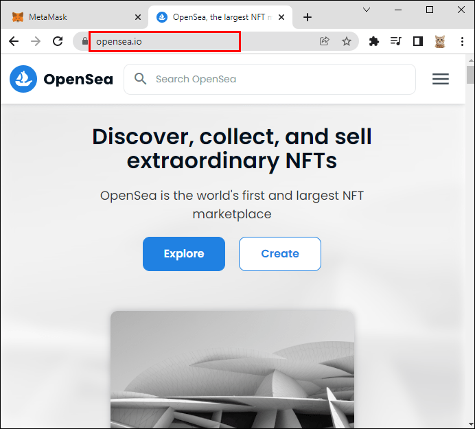
2. Click on the Profile icon at the top-right.
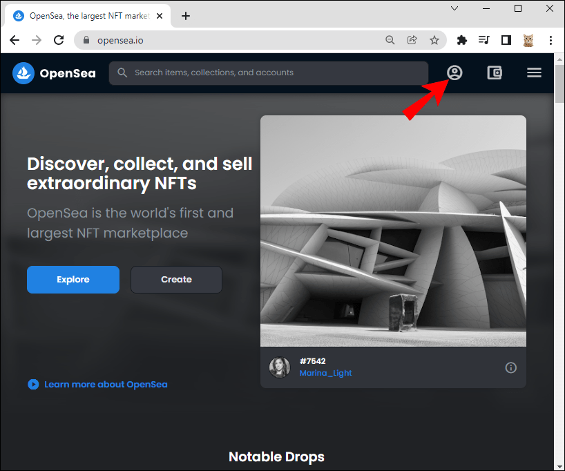
3. Select the MetaMask option from the wallet list.
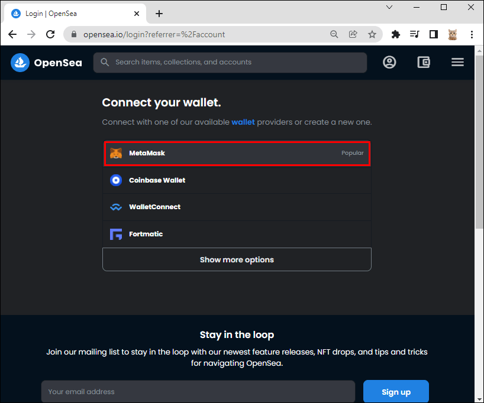
4. Link the MetaMask wallet you have to OpenSea.
5 .Click on “Next.”
6. Add your email address, username, and more.
You can always change your details later, such as profile pictures, username, and other parts of your OpenSea
profile.
Now Buying an KosherNft
1. Log into your OpenSea account.
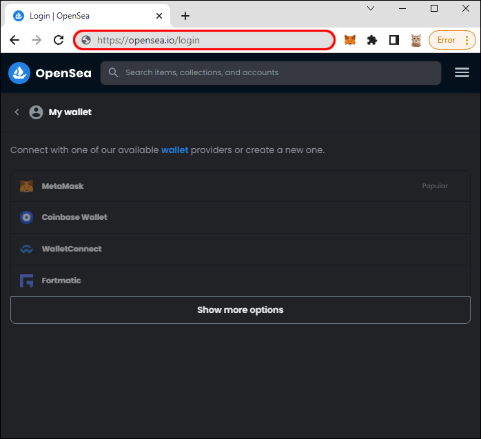
2. Look for one that catches your eye.
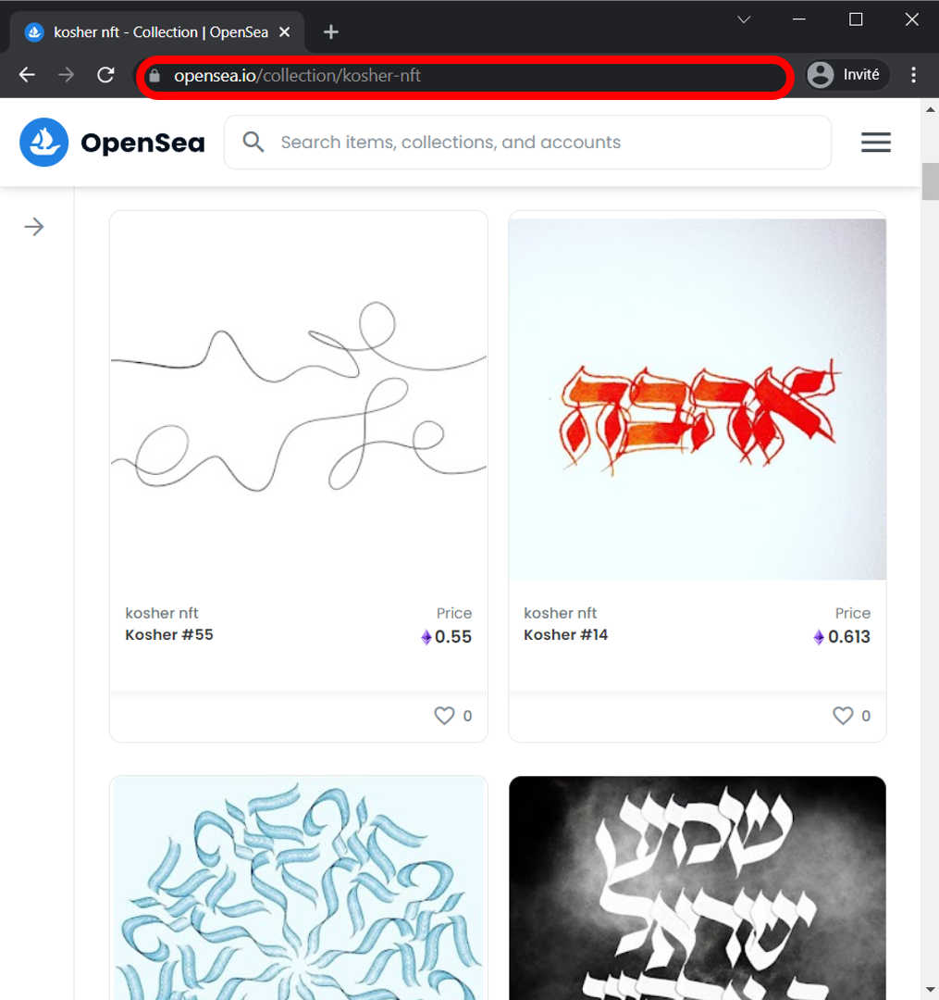
3. Click on the NFT.
4.Select “Buy Now.”
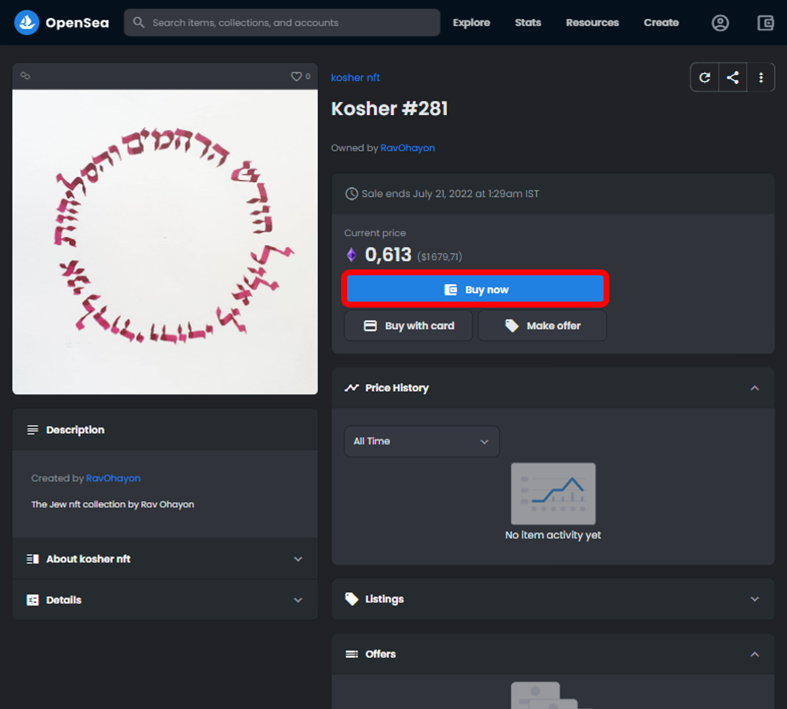
5. Check the box to agree to OpenSea’s terms.
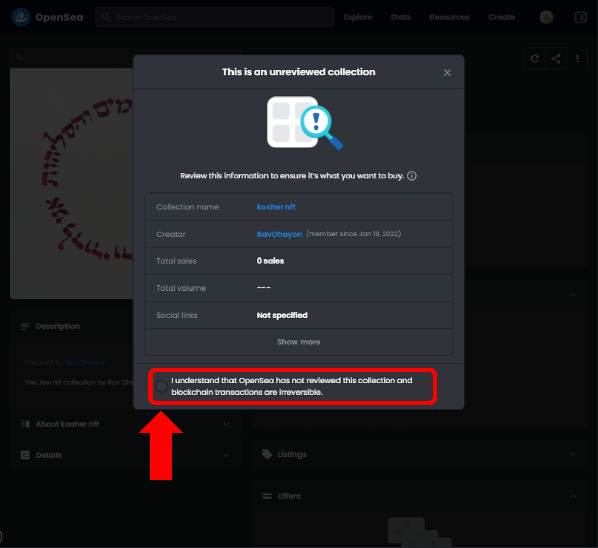
6. Check the box to agree to OpenSea’s terms.
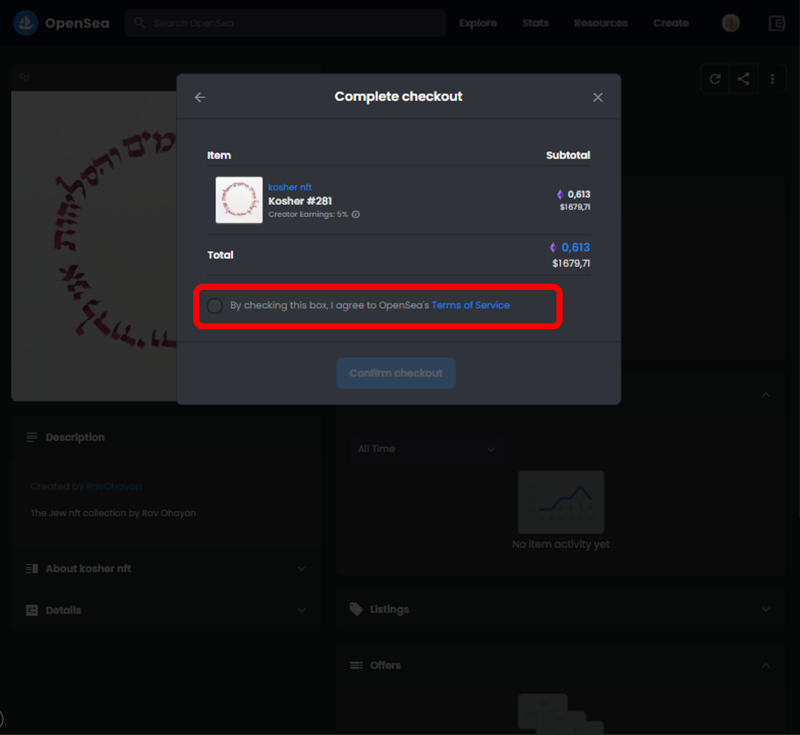
6. click on button confirm checkout
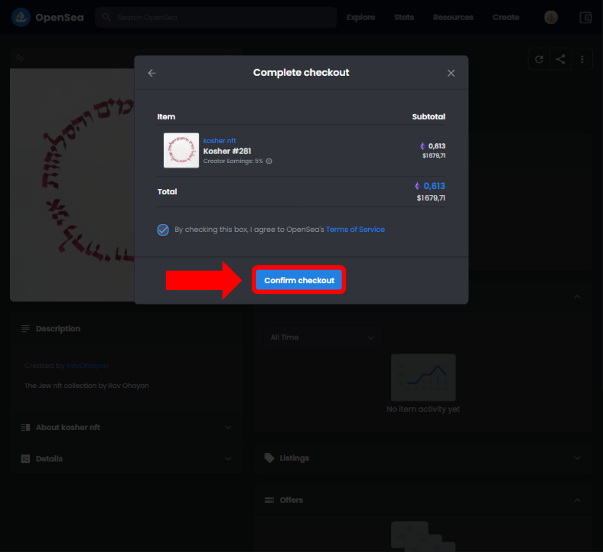
7. a metamask pop-up will appear
8. click sign
9. follow the last instructions and confirm the purchase
Additional FAQs
Why Won’t OpenSea Connect to MetaMask?
Sometimes, OpenSea might not allow you to connect to MetaMask. This can happen if you enter incorrect details. If you know you entered your information correctly, try these solutions:
• Exit your browser.
• Clear caches.
• Reconnect to the internet.
These steps may solve the problem, especially if it’s only a network issue. If not, you’ll have to contact customer service.
Does OpenSea Have an App?
Yes, OpenSea does have apps for iOS and Android. The caveat is you can’t buy NFTs from the app; you can only browse. To buy NFTs, you’ll have to log in to your account on a computer first.
A potential reason is that Apple and Google will take a cut of any purchases made in apps on their app stores. Another is that Ethereum isn’t supported on either platform.